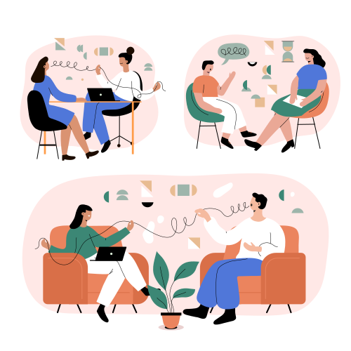

Psiholog Clinician cu drept de liberă practică Cristina Anghel.
Servicii psihoterapie și Hipnoza Ericksoniană.
Psiholog Clinician cu drept de liberă practică Cristina Anghel.
Servicii psihoterapie și Hipnoza Ericksoniană.

Unde se Desfășoară Psihoterapia?
Care este primul pas în căutarea unui terapeut?
Ce se întâmplă în prima sesiune de terapie?
Într-un spațiu sigur, confidențial, în care te simți acceptat și în care poti explora forțele conștiente și inconștiente care îți motivează comportamentele. Într-o psihoterapie poți deveni conștient de lumea ta interioară și vei dobândi o privire mai obiectivă asupra dificultăților tale. Psihoterapia individuală se adresează celor care sunt într-un impas existențial sau celor care vor să se dezvolte personal, ajutandu-te să îți depășești dificultățile emoționale și relaționale, să faci schimbări care să-ți îmbunătățească viața. Sedintele de psihoterapie sunt confidențiale și dureaza 50 de minute.

Perioade de schimbări și tranziții.
Separare sau divorț.
Pierdere (doliu).
Sentimente de neajutorare, pesimism.
Furie excesivă sau iritabilitate.
Stimă de sine scazută, devalorizare.
Abuz de substanțe (alcool, drog).
Dependență jocuri de noroc.
Anxietate, atacuri de panică, fobii.
Depresie.
Retragere din viața socială.
Probleme de relaționare.
Dificultăți în luarea deciziilor.
Sentimente de vinovăție.
Experiența trăirii unor situații traumatice în trecut sau în prezent.
Tulburări alimentare, ale imaginii corporale.
Dificultăți legate de somn.
Majoritatea oamenilor—chiar și cei cu un sistem de suport puternic și fără o boală mentală diagnosticabilă—pot beneficia de terapie la un moment dat în viața lor. Dar semnele că terapia ar putea fi utilă nu sunt întotdeauna evidente. Dacă te confrunți cu perioade prelungite de furie, tristețe sau anxietate; ai dificultăți în relații sau probleme de comunicare; faci față unui eveniment dureros specific, cum ar fi moartea unei persoane dragi, o despărțire sau pierderea unui loc de muncă; sau te confrunți cu întrebări legate de identitate sau stimă de sine, ar putea fi momentul să încerci terapia pe termen scurt sau lung.
Dacă te simți deprimat, copleșit de viața de zi cu zi sau incapabil să te conectezi cu oamenii din jurul tău, este foarte probabil ca un terapeut competent să te poată ajuta. Semne mai subtile că ai putea beneficia de terapie includ realizarea că ai reacționat exagerat la mici eșecuri sau o senzație de "blocare" sau oboseală mentală.
Este obișnuit ca oamenii să caute terapie cu o problemă specifică în minte pe care doresc să o abordeze; ei pot încheia terapia atunci când simt că au făcut acest lucru. Alții, însă, intră în terapie fără obiective clare și doar cu o senzație vagă că ceva nu este în regulă. Ambele sunt motive valabile pentru a căuta ajutor.

A merge la terapie—fie individual, de grup, sau pentru cupluri—este mai comun decât mulți oameni cred. CDC a constatat că, în general, aproximativ 40% dintre adulții asigurați cu vârste între 18 și 64 de ani au văzut un terapeut în perioada 2012-2013. Conform NIMH, mai mult de 20 de milioane de adulți cu o boală mentală în SUA au primit servicii de sănătate mintală de un fel în 2017; o analiză din 2019 a concluzionat că 3 milioane de persoane suplimentare erau tratate pentru depresie în 2015 față de 1998.
Terapia de cuplu funcționează cel mai bine atunci când ambii parteneri participă și se angajează să-și îmbunătățească relația împreună. Totuși, este comun ca terapeuții să vadă partenerii individual, pentru a permite fiecăruia să discute problemele care pot fi dificile de abordat în prezența partenerului. În cazurile în care un partener refuză să participe la terapia de cuplu, sesiunile individuale pot ajuta încă partenerul celălalt să își identifice propriile comportamente și tipare de gândire care ar putea contribui la conflictele de relație.
Mulți care doresc să participe la terapia de cuplu descoperă că partenerul lor este împotriva ideii. Dacă partenerul reticent nu este sigur că va ajuta sau este îngrijorat de faptul că se va simți atacat, poate fi util ca cuplul să aibă o conversație onestă despre preocupările specifice și să abordeze miturile comune despre terapia de cuplu. Stabilirea unei consultații telefonice fără presiune sau a unei sesiuni de încercare poate ajuta, de asemenea, partenerul ezitant să devină confortabil cu procesul. În cazurile de refuz extrem, terapia individuală poate fi încă utilă pentru celălalt partener și pentru relație.
Copiii experimentează emoții dificile și tranziții provocatoare, la fel ca și adulții. Dar nu este întotdeauna ușor pentru părinți să determine dacă astfel de dificultăți reflectă provocări normale de dezvoltare sau preocupări mai serioase. Dacă copilul tău pare "abătut" sau nu este el însuși pentru mai mult de două săptămâni, are dificultăți academice, se comportă violent la școală sau acasă, sau are dificultăți persistente în a-și face prieteni, un terapeut poate fi de ajutor. Dacă copilul tău menționează sinuciderea sau că dorește să se rănească pe sine sau pe alții, caută ajutor imediat. Dacă nu ești sigur, discută preocupările tale cu pediatrul copilului.
Terapia de grup—în care unul sau mai mulți terapeuți lucrează cu mai multe persoane simultan—este de obicei mai puțin costisitoare decât terapia individuală. Permite pacienților să primească suport social de la ceilalți membri ai grupului și să vadă că nu sunt singuri în luptele lor; acest aspect poate fi deosebit de benefic în procesul de recuperare când se confruntă cu probleme precum abuzul de substanțe sau durerea. Terapia de grup încurajează, de asemenea, membrii să își îmbunătățească abilitățile de comunicare și să învețe să respecte experiențele și perspectivele altora, ceea ce poate fi util pentru cei care se confruntă cu dificultăți în situații sociale.

În general, mulți pacienți consideră că este semnificativ mai ușor să abordeze subiectele jenante sau dureroase cu o singură persoană decât cu mai multe. Terapia individuală oferă, de asemenea, mai multă atenție unu-la-unu, ceea ce înseamnă că pacienții sunt mai probabil să primească un tratament personalizat pentru nevoile lor specifice. Confidențialitatea este, de asemenea, garantată în terapia individuală (cu excepția cazurilor în care un client reprezintă un pericol iminent pentru sine sau pentru alții); în timp ce membrii grupului sunt rugați să păstreze informațiile confidențiale, nu este garantat că vor face acest lucru.